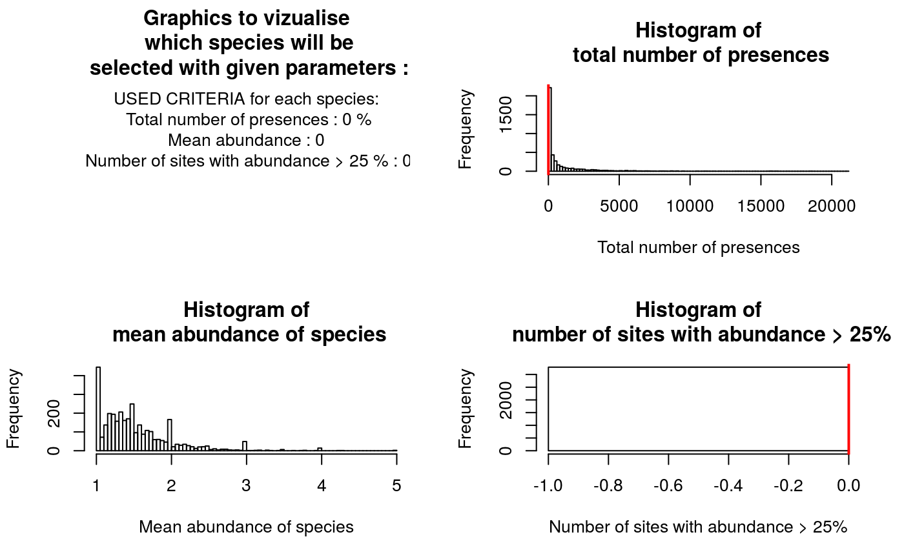
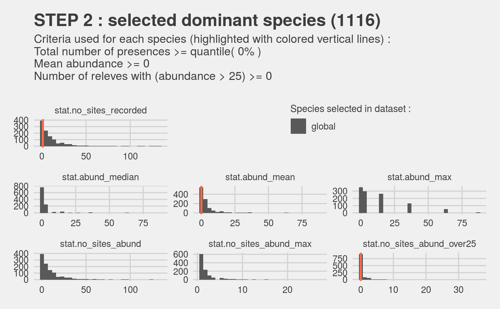
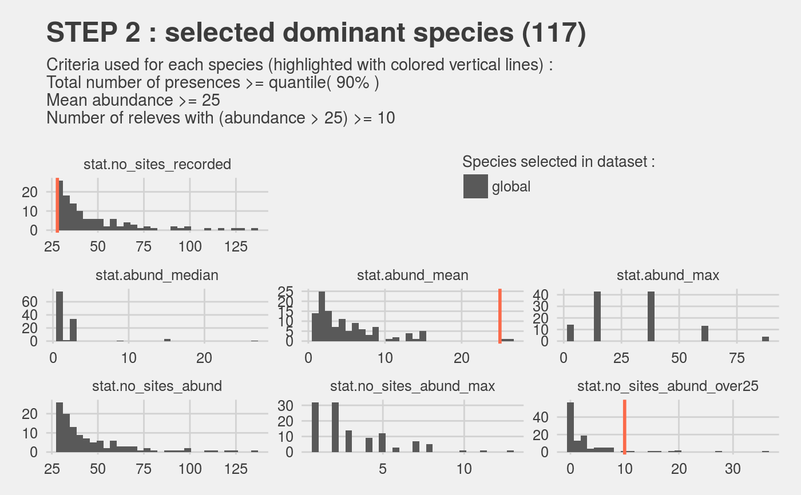
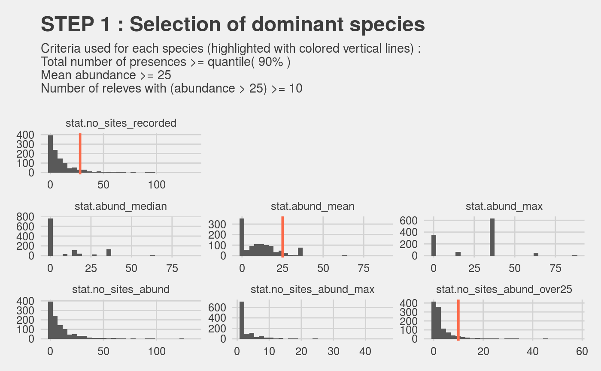
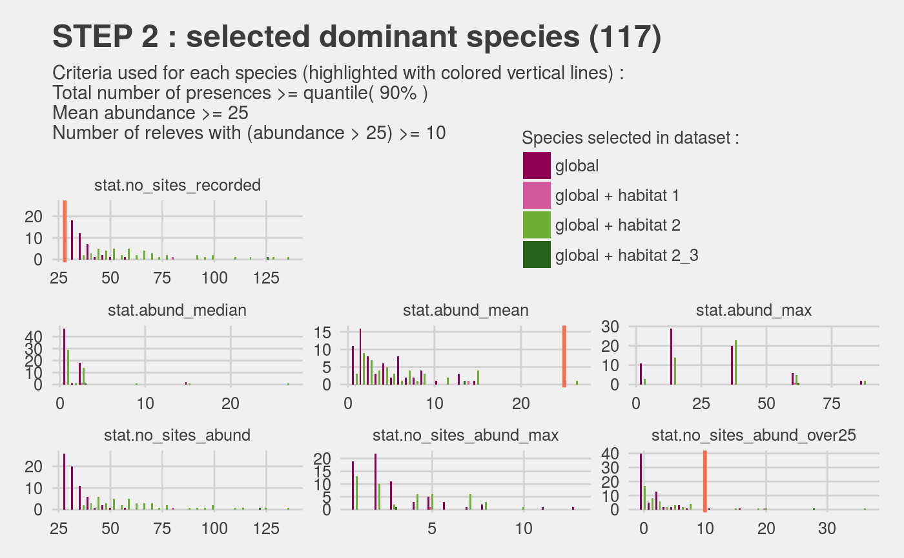

R/PRE_FATE.selectDominant.R
This script is designed to select dominant species from abundance records, and landclass if the information is available.
PRE_FATE.selectDominant(mat.site.species.abund = NULL, sites = NULL, species = NULL, abund = NULL, landclass = NULL, selectionRule.quanti = 0, selectionRule.min_mean_abund = 0, selectionRule.min_no_high_abund = 0, doLandclass = FALSE, selectionRule.min_percent_landclass = 0.05, selectionRule.min_no_landclass = 5)
| mat.site.species.abund | a data.frame with at least 3 columns : sites ID, species ID, abundance values (e.g. Braun Blanquet) with NA when no information, landscape ID (optional) |
|---|---|
| sites | a vector with sites ID |
| species | a vector with species ID |
| abund | a vector with abundance values (e.g. Braun Blanquet) with NA when no information |
| landclass | a vector with landscape ID |
| selectionRule.quanti | minimum quantile of total number of sites that must occupy the species (between 0 and 1) |
| selectionRule.min_mean_abund | minimal average abundance of the species |
| selectionRule.min_no_high_abund | minimum number of sites where species is dominant (>= 25 % of coverage) |
| doLandclass | default FALSE. If TRUE, selection is also done including constraints on landscape class |
| selectionRule.min_percent_landclass | minimum percentage of the landclass occupied by the species (between 0 and 1) |
| selectionRule.min_no_landclass | minimum number of sites of a landclass occupied by the species |
a data.frame with all the species selected and the values of
parameters used to make the selection :
number of sites with information (presence-absence or abundance)
number of sites with abundance information
median abundance (coverage percentage)
mean abundance (coverage percentage)
maximal abundance (coverage percentage)
number of sites with maximal abundance
number of sites with maximal abundance >= 25
dataset in which the species has been selected as dominant (global = all data, or landclass)
This function provides a way to select dominant species based on abundance sampling information. This information can be given either directly in the form of a data.frame, or indirectly with a vector for each required information (sites, species, abundance, landscape class - optional).
3 rules are applied to make the species selection :
the species should be found in at
least n sites, which corresponds to the quantile selectionRule.quanti
of all the number of records per species
the species should have a mean
abundance superior or equal to selectionRule.min_mean_abund
the species should be dominant (i.e. represent
at least 25 % of the coverage of the site)
in at least selectionRule.min_no_high_abund sites
If landscape information is available (e.g. type of environment : urban, desert, grassland... ; type of vegetation : shrubs, forest, alpine grasslands... ; etc), 2 rules can be added to the selection steps, in order to keep species that are not dominant at the large scale but could be representative of a specific environment :
the species should occupy at least
selectionRule.min_percent_landclass % of a landclass
the species should be found in at least
selectionRule.min_no_landclass sites of a landclass
## Load example data data(MontBlanc) str(MontBlanc)#> List of 3 #> $ mat.releves :'data.frame': 12302 obs. of 4 variables: #> ..$ sites : int [1:12302] 660398 662913 663085 663104 663104 664839 751362 751377 751484 922672 ... #> ..$ species : chr [1:12302] "Abies alba Miller" "Abies alba Miller" "Abies alba Miller" "Abies alba Miller" ... #> ..$ abund : Factor w/ 7 levels "","+","1","2",..: 2 2 2 3 6 4 2 3 2 2 ... #> ..$ landclass: int [1:12302] 4 2 6 4 4 4 2 2 3 8 ... #> $ mat.traits :'data.frame': 337 obs. of 6 variables: #> ..$ species : chr [1:337] "X23" "X139" "X190" "X197" ... #> ..$ Disp : num [1:337] 4 5 7 6 7 1 4 7 7 7 ... #> ..$ Light : num [1:337] 2 2 3 3 5 3 5 5 5 3 ... #> ..$ Height : num [1:337] 1500 50 70 11 30 ... #> ..$ Palatability: Factor w/ 5 levels "","0","1","2",..: 4 5 5 5 5 5 5 5 5 5 ... #> ..$ GROUP : Factor w/ 3 levels "C","H","P": 3 2 2 2 2 2 2 2 2 2 ... #> $ mat.nicheOverlap: niolap [1:270, 1:270] NA 0.524 0.789 0.626 0.675 ... #> ..- attr(*, "dimnames")=List of 2 #> .. ..$ : chr [1:270] "X10053" "X10106" "X10113" "X10182" ... #> .. ..$ : chr [1:270] "X10053" "X10106" "X10113" "X10182" ...## MontBlanc$mat.releves : data.frame ## Transformation of Braun-Blanquet abundances MontBlanc$mat.releves$abund = PRE_FATE.abundBraunBlanquet(abund = MontBlanc$mat.releves$abund) ## Selection of dominant species ## With default parametrization sp.DOM = PRE_FATE.selectDominant(mat.site.species.abund = MontBlanc$mat.releves)#> #> ############## SAMPLING INFORMATIONS ############## #> #> Number of releves : 12302 #> Number of sites : 568 #> Number of species : 1116 #> #> ############## ABUNDANCE INFORMATIONS ############## #> #> Percentage of releves with abundance information : 99.53666 %#> Warning: Species with NO abundance information can only be selected with the criteria based on number of presences...#> #> Percentage of sites with abundance information : 99.82394 % #> Percentage of sites without abundance information : 1.232394 % #> Percentage of species with abundance information : 99.73118 % #> Percentage of species without abundance information : 4.928315 % #> #> ############## STATISTICS COMPUTATION ############## #> #> For each species, calculate : #> - stat.no_sites_abund = number of sites #> - stat.abund_median = median abundance (coverage percentage) #> - stat.abund_mean = mean abundance (coverage percentage) #> - stat.abund_max = maximal abundance (coverage percentage) #> - stat.no_sites_abund_max = number of sites with maximal abundance #> - stat.no_sites_abund_over25 = number of sites with maximal abundance >= 25% #> This is done over all sites, and for each landclass #> #> > Landclass : all ... #> #> ############## SELECTION OF DOMINANT SPECIES ############## #> #> > Over all sites... #> > Combine selections...#>#> Warning: Removed 20 rows containing non-finite values (stat_bin).#> Warning: Removed 4466 rows containing missing values (geom_vline).#>#> Warning: Removed 20 rows containing non-finite values (stat_bin).#> Warning: Removed 4466 rows containing missing values (geom_vline).#>#> Warning: Removed 20 rows containing non-finite values (stat_bin).#> Warning: Removed 4466 rows containing missing values (geom_vline).#>#> Warning: Removed 20 rows containing non-finite values (stat_bin).#> Warning: Removed 4466 rows containing missing values (geom_vline).#> #> > Done! #> #> 1116 species have been selected with the given criteria. #> Complete table of information about selected species can be find in output files.## Redefinition of global selection rules sp.DOM = PRE_FATE.selectDominant(mat.site.species.abund = MontBlanc$mat.releves , selectionRule.quanti = 0.9 , selectionRule.min_mean_abund = 25 , selectionRule.min_no_high_abund = 10)#> #> ############## SAMPLING INFORMATIONS ############## #> #> Number of releves : 12302 #> Number of sites : 568 #> Number of species : 1116 #> #> ############## ABUNDANCE INFORMATIONS ############## #> #> Percentage of releves with abundance information : 99.53666 %#> Warning: Species with NO abundance information can only be selected with the criteria based on number of presences...#> #> Percentage of sites with abundance information : 99.82394 % #> Percentage of sites without abundance information : 1.232394 % #> Percentage of species with abundance information : 99.73118 % #> Percentage of species without abundance information : 4.928315 % #> #> ############## STATISTICS COMPUTATION ############## #> #> For each species, calculate : #> - stat.no_sites_abund = number of sites #> - stat.abund_median = median abundance (coverage percentage) #> - stat.abund_mean = mean abundance (coverage percentage) #> - stat.abund_max = maximal abundance (coverage percentage) #> - stat.no_sites_abund_max = number of sites with maximal abundance #> - stat.no_sites_abund_over25 = number of sites with maximal abundance >= 25% #> This is done over all sites, and for each landclass #> #> > Landclass : all ... #> #> ############## SELECTION OF DOMINANT SPECIES ############## #> #> > Over all sites... #> > Combine selections...#>#> Warning: Removed 20 rows containing non-finite values (stat_bin).#> Warning: Removed 4466 rows containing missing values (geom_vline).#>#> Warning: Removed 20 rows containing non-finite values (stat_bin).#> Warning: Removed 4466 rows containing missing values (geom_vline).#>#> Warning: Removed 2 rows containing non-finite values (stat_bin).#> Warning: Removed 502 rows containing missing values (geom_vline).#>#> Warning: Removed 2 rows containing non-finite values (stat_bin).#> Warning: Removed 502 rows containing missing values (geom_vline).#> #> > Done! #> #> 125 species have been selected with the given criteria. #> Complete table of information about selected species can be find in output files.## Add landclass selection with default parametrization sp.DOM = PRE_FATE.selectDominant(mat.site.species.abund = MontBlanc$mat.releves , selectionRule.quanti = 0.9 , selectionRule.min_mean_abund = 25 , selectionRule.min_no_high_abund = 10 , doLandclass = TRUE)#> #> ############## SAMPLING INFORMATIONS ############## #> #> Number of releves : 12302 #> Number of sites : 568 #> Number of species : 1116 #> #> ############## ABUNDANCE INFORMATIONS ############## #> #> Percentage of releves with abundance information : 99.53666 %#> Warning: Species with NO abundance information can only be selected with the criteria based on number of presences...#> #> Percentage of sites with abundance information : 99.82394 % #> Percentage of sites without abundance information : 1.232394 % #> Percentage of species with abundance information : 99.73118 % #> Percentage of species without abundance information : 4.928315 % #> #> ############## STATISTICS COMPUTATION ############## #> #> For each species, calculate : #> - stat.no_sites_abund = number of sites #> - stat.abund_median = median abundance (coverage percentage) #> - stat.abund_mean = mean abundance (coverage percentage) #> - stat.abund_max = maximal abundance (coverage percentage) #> - stat.no_sites_abund_max = number of sites with maximal abundance #> - stat.no_sites_abund_over25 = number of sites with maximal abundance >= 25% #> This is done over all sites, and for each landclass #> #> > Landclass : all ... #> > Landclass : 4 ... #> > Landclass : 2 ... #> > Landclass : 6 ... #> > Landclass : 3 ... #> > Landclass : 8 ... #> > Landclass : 5 ... #> > Landclass : 7 ... #> > Landclass : 1 ... #> #> ############## SELECTION OF DOMINANT SPECIES ############## #> #> > Over all sites... #> > Over each landclass... #> > Combine selections...#>#> Warning: Removed 20 rows containing non-finite values (stat_bin).#> Warning: Removed 4466 rows containing missing values (geom_vline).#>#> Warning: Removed 20 rows containing non-finite values (stat_bin).#> Warning: Removed 4466 rows containing missing values (geom_vline).#>#> Warning: Removed 2 rows containing non-finite values (stat_bin).#> Warning: Removed 502 rows containing missing values (geom_vline).#>#> Warning: Removed 2 rows containing non-finite values (stat_bin).#> Warning: Removed 502 rows containing missing values (geom_vline).#> #> > Done! #> #> 125 species have been selected with the given criteria. #> Complete table of information about selected species can be find in output files.## Redefinition of landclass selection rules sp.DOM = PRE_FATE.selectDominant(mat.site.species.abund = MontBlanc$mat.releves , selectionRule.quanti = 0.9 , selectionRule.min_mean_abund = 25 , selectionRule.min_no_high_abund = 10 , doLandclass = TRUE , selectionRule.min_percent_landclass = 0.05 , selectionRule.min_no_landclass = 10)#> #> ############## SAMPLING INFORMATIONS ############## #> #> Number of releves : 12302 #> Number of sites : 568 #> Number of species : 1116 #> #> ############## ABUNDANCE INFORMATIONS ############## #> #> Percentage of releves with abundance information : 99.53666 %#> Warning: Species with NO abundance information can only be selected with the criteria based on number of presences...#> #> Percentage of sites with abundance information : 99.82394 % #> Percentage of sites without abundance information : 1.232394 % #> Percentage of species with abundance information : 99.73118 % #> Percentage of species without abundance information : 4.928315 % #> #> ############## STATISTICS COMPUTATION ############## #> #> For each species, calculate : #> - stat.no_sites_abund = number of sites #> - stat.abund_median = median abundance (coverage percentage) #> - stat.abund_mean = mean abundance (coverage percentage) #> - stat.abund_max = maximal abundance (coverage percentage) #> - stat.no_sites_abund_max = number of sites with maximal abundance #> - stat.no_sites_abund_over25 = number of sites with maximal abundance >= 25% #> This is done over all sites, and for each landclass #> #> > Landclass : all ... #> > Landclass : 4 ... #> > Landclass : 2 ... #> > Landclass : 6 ... #> > Landclass : 3 ... #> > Landclass : 8 ... #> > Landclass : 5 ... #> > Landclass : 7 ... #> > Landclass : 1 ... #> #> ############## SELECTION OF DOMINANT SPECIES ############## #> #> > Over all sites... #> > Over each landclass... #> > Combine selections...#>#> Warning: Removed 20 rows containing non-finite values (stat_bin).#> Warning: Removed 4466 rows containing missing values (geom_vline).#>#> Warning: Removed 20 rows containing non-finite values (stat_bin).#> Warning: Removed 4466 rows containing missing values (geom_vline).#>#> Warning: Removed 2 rows containing non-finite values (stat_bin).#> Warning: Removed 502 rows containing missing values (geom_vline).#>#> Warning: Removed 2 rows containing non-finite values (stat_bin).#> Warning: Removed 502 rows containing missing values (geom_vline).#> #> > Done! #> #> 125 species have been selected with the given criteria. #> Complete table of information about selected species can be find in output files.## 2 .csv and 2 .pdf files have been produced str(sp.DOM)#> 'data.frame': 125 obs. of 9 variables: #> $ species : chr "Acer pseudoplatanus L." "Achillea millefolium L." "Agrostis capillaris L." "Agrostis rupestris All." ... #> $ stat.abund_max : num 87.5 37.5 37.5 37.5 37.5 37.5 87.5 37.5 37.5 37.5 ... #> $ stat.no_sites_abund_max : num 2 20 26 6 25 9 1 5 42 10 ... #> $ stat.no_sites_abund : num 33 61 51 29 42 37 21 29 111 38 ... #> $ stat.no_sites_abund_over25: num 11 20 26 6 25 9 10 5 42 10 ... #> $ stat.abund_median : num 15 0.5 37.5 0.5 37.5 0.5 15 0.5 15 0.5 ... #> $ stat.abund_mean : num 18.9 13.6 22.5 10.7 24.9 ... #> $ stat.no_sites_recorded : int 33 62 51 29 42 37 21 29 111 38 ... #> $ SELECTION : chr "all" "all_2" "all_2" "all" ...